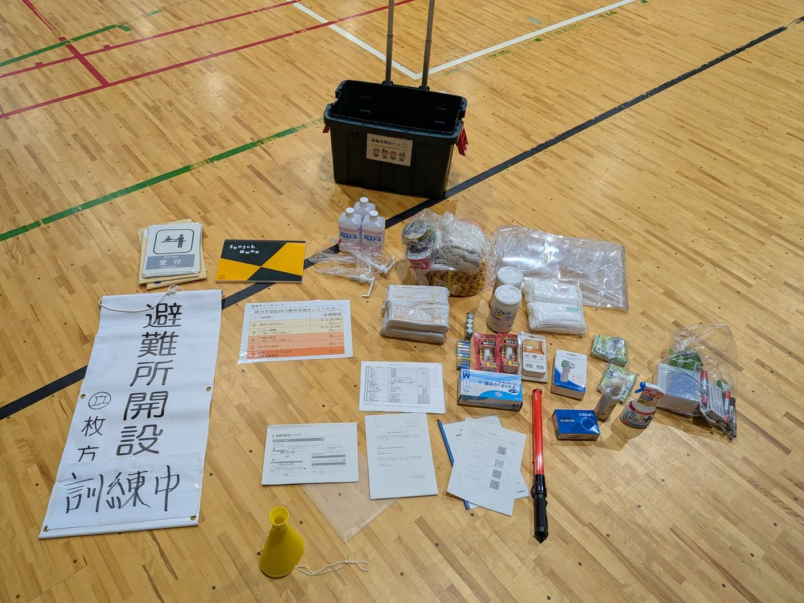
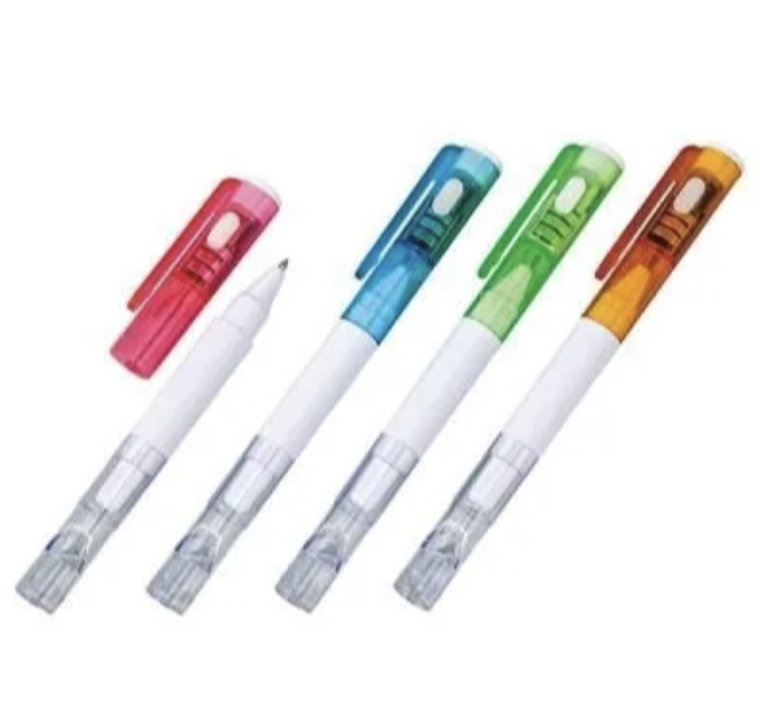

避難所が実際にどのように開設され、どんな設備が整っているのかを知っていただく機会です。ぜひご家族・ご近所の方とご参加ください。
※ イメージイラストです。実際の会場のようすとは異なります。
会場の詳細は現在調整中です。決まり次第あらためてお知らせします
熊本県などでは、近年も大きな地震が発生し、多くの方が避難所での生活を経験されました。いざ災害が起きたとき、避難所が「どのように開設され」「どのような設備が整っているのか」を知っているかどうかで、安心感は大きく変わります。
今回の防災訓練は、実際に避難所開設の流れを体験し、非常食や設備に実際に触れていただくことで、地域の皆さまに防災をより身近に感じていただく機会にしたいと考えています。
小さなお子さまからお年寄りまで、どなたでも楽しみながら学んでいただける内容を予定しています。ぜひお誘い合わせのうえご参加ください。
現時点で予定している主なプログラムです
枚方市が各避難所に常設している、避難所を開くための道具一式です
災害が起きたとき、避難所はこのキットを開けるところから始まります。受付の表示や記録用紙、照明、衛生用品などがひとまとめに収められていて、どこの避難所でも同じ手順で開設できるようになっています。
普段は倉庫に保管されていて目にする機会がありませんので、当日は中身を実際に広げてご覧いただきます。「こんなものが備えてあるのか」「これは入っていないのか」を知っておくことが、ご家庭での備えを考えるきっかけになります。

受付の道具から衛生用品、記録用紙まで、避難所を開くために必要なものが一式そろっています。
出典：枚方市「避難所開設キット取扱説明書」（令和5年4月）
※ 品目や個数は変更される場合があります。
そのまま家庭の備えとして使っていただけるものをご用意しました

※ 数に限りがあります。なくなり次第終了となりますのでご了承ください。